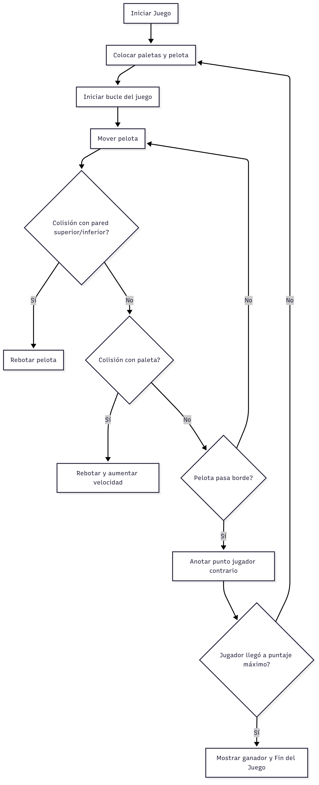

PONG
Historia del Pong
La historia de PONG es crucial para entender el origen de la industria moderna de los videojuegos.Es uno de los primeros videojuegos arcade; lanzado por Atari en 1972.
Este sencillo juego de arcade representa una simulación de un partido de ping-pong.
Con gráficos muy básicos y una jugabilidad sencilla, y se convirtió en un clásico
que ayudó a popularizar la industria de los videojuegos.
Reglas y Mecánicas del Juego
- El juego es para dos jugadores (Jugador 1 y Jugador 2).
- Cada jugador controla una paleta que se mueve verticalmente en los extremos de la pantalla.
- La pelota rebota en las paredes superior e inferior.
- Si la pelota pasa el borde de un jugador, el otro anota un punto.
- Gana quien alcance primero el puntaje máximo (por ejemplo, 10 puntos).
- Después de cada rebote con una paleta, la pelota puede aumentar su velocidad.
Algoritmo del Juego
- Inicializar pantalla, puntajes en 0, paletas y pelota en posición inicial.
- Iniciar el bucle principal del juego.
- Mover la pelota en su dirección actual.
- Detectar colisiones:
- Si toca la pared superior o inferior, invierte la dirección vertical.
- Si toca una paleta, invierte la dirección horizontal y aumenta velocidad.
- Si pasa un borde, el jugador contrario gana un punto y se reinicia la pelota.
- Actualizar marcador y pantalla.
- Si un jugador llega al puntaje máximo, termina el juego y se muestra al ganador.
- Si no, repetir el bucle.
Diagrama del juego

Conversación con la IA
Ver conversación completa con la IA